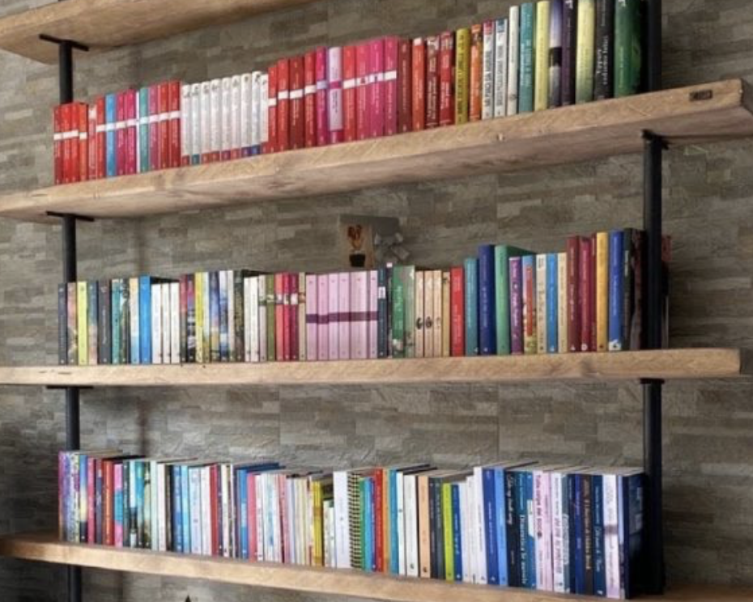
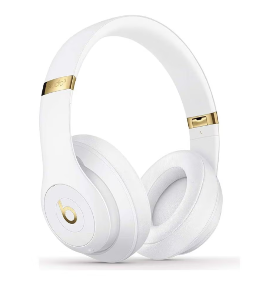

CULTURE
Things I’ve enjoyed, discoveredor found worth sharing.

BOOKS
Passages I enjoyed. And wanted to keep here.
Robert Harris · The Cicero Trilogy

MUSIC
Most played songs and latest discoveries.